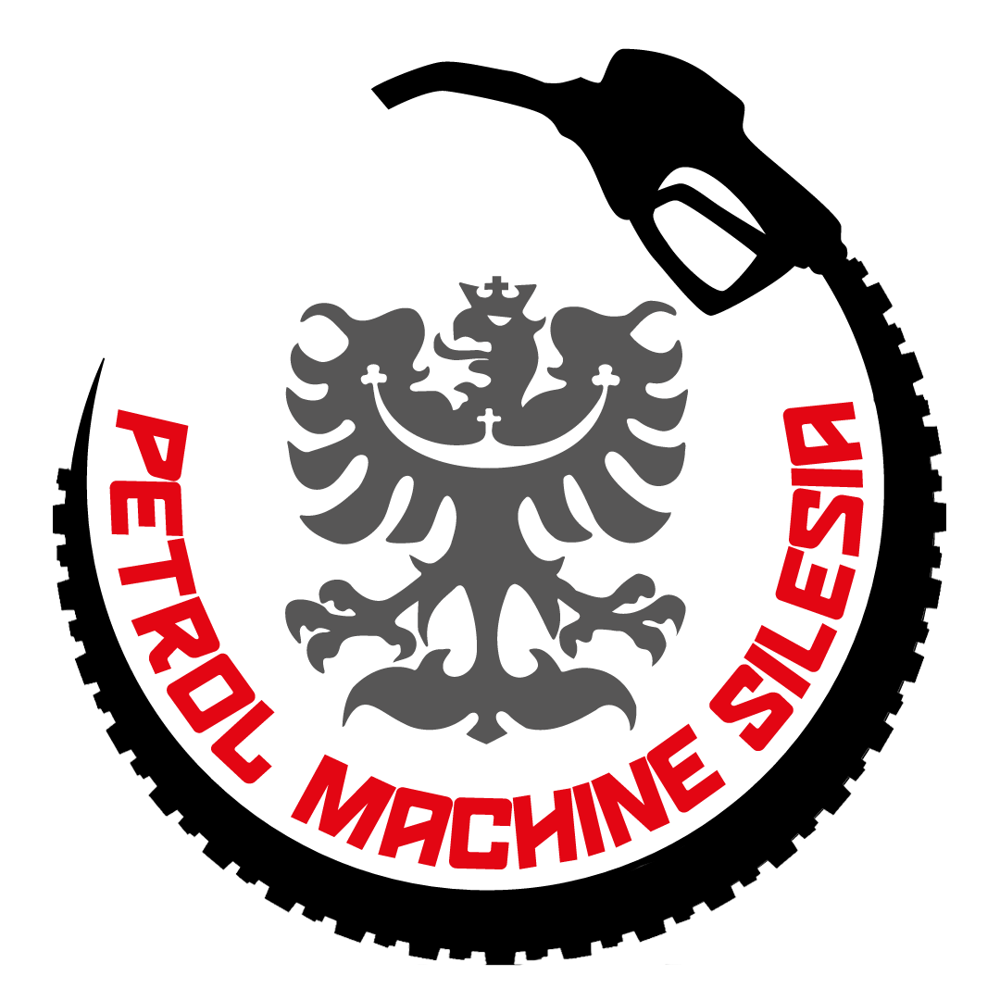

Nahraj svou GPX trasu, a utvářej s námi svět který nenajdeš v žádných offroad mapách.
Projekt skupiny Petrol Machine Silesia
Vstup do atlasu je pouze pro zvané.
Tvé členství podléhá schválení adminem a pro jeho získání musíte splnit dvě věci:
- Mít doporučení od někoho, kdo už v komunitě je.
- Vložit alespoň jednu vlastní GPX trasu.

CendurOFF
Trasy ▾
Nahrát trasu
Vyberte GPX soubor s vaší trasou.
O projektu
CendurOFF vytvořila a spravuje parta Petrol Machine Silesia —
skupina lidí, které baví offroad, enduro a objevování tras, které nenajdete na žádné
turistické mapě.
Cílem je jednoduchá mapa, kam si každý může nahrát vlastní GPX trasu, ukázat
ji ostatním a přidat pár fotek z cesty.
Brzy: možnost koupit si nálepku Petrol Machine Silesia a podpořit
tak provoz projektu.